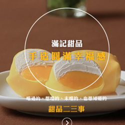
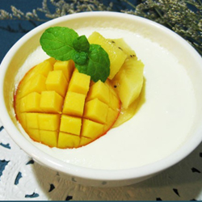

香港甜品
簡介
香港原先只有供應茶水服務的「茶寮」，沒有套餐點心的服務，時至今日的「茶寮」，遂變成餐廳式的經營，規模也擴大不少，從品質上來區分有「茶餐廳」與「茶樓」等。 一般人很容易將「茶餐廳」與「茶樓」混淆，但兩者是截然不同的等級，「茶餐廳」是較平民化的消費，而「茶樓」則是較正規且高級的路線。 甚麼是「茶餐廳」 「茶餐廳」早期叫作「冰室」，遍佈在香港各區，較沒有固定的營業時間，通常由早上 6 點開始至凌晨 1 點，而旺角等繁忙地區的茶餐廳更可能通宵營業。 第二次世界大戰後，當地受到西方飲食文化的影響，「冰室」如雨後春筍般的營業，提供咖啡、奶茶、紅豆冰等飲品，配以三明治、奶油土司等小食，部分更設有麵包工場，製造新鮮菠蘿麵包、蛋撻等，後來與西菜館和餐室的模式結合，演變成今日的「茶餐廳」，擁有多元化的美食餐餚。 甚麼是「茶樓」 「茶樓」的記載可追溯到唐朝年代，距今有 1000 多年的歷史，而當時不作「茶樓」是為「茗鋪」，常有背景顯赫的高官貴族光顧，作為古代高級階層的社交場所，以品茶會友，欣賞書畫的風氣，在經典的電視劇情結是非常容易看到的。 時至今日的「茶樓」，主要以廣州和香港的規模為大，有 2-3 層樓，而粵語的「茶樓」即為「一盅兩件」，指的是一壺茶配二件點心，點心種類繁多且有一百多年的歷史，由推車送上熱騰騰的蝦餃、燒賣、腸粉、春卷、牛百葉、雞扎、鳳爪等經典餐餚，這種別於「茶餐廳」的服務模式，走的是更精緻的港式料理。
滿記甜品-楊枝甘露
「楊枝甘露」據報最早於1984年在香港的利苑酒家首先出現。 另一個說法是香港利苑酒家於1987年，準備在新加坡開設第一間海外分店「利苑餐廳」的時候，為了因應當地全年炎熱潮濕的東南亞氣候，於是便在開業前，由香港利苑酒家的名廚黃永幟，把原本該酒家的燉製甜品，改良成為一種冷吃的消暑甜品，他以冰凍的糖水、奶油奶、西米露，結合芒果粒和西柚肉等食材，製成了這種口感滑潤和清甜爽口的新甜品。 另外，還有一個說法是新加坡利苑餐廳開業前，香港利苑酒家根據當地習俗吃撈起魚生後，剩下很多西柚肉，最後採納點心部的解決方案，將西柚肉加進平常的芒果西米露中。新甜品由總監司徒安取其名為「楊枝甘露」，其含義是「觀音用楊柳枝撒下甘露般令人神清氣爽」。香港利苑酒家同時也在香港推出這種新甜品，而其他酒家和甜品店也使用類似食材，調製同樣以「楊枝甘露」命名的消暑甜品。
雙皮燉奶
據說「雙皮燉奶」這道流傳百年有餘的甜點是清朝末年廣州順德這個地方有個人名叫何十三的農家子弟有天清晨無意間煮出來的，在香港也有賣這道點心馳名中外的專門店~~義順牛奶公司義順公司為了確保牛奶的品質甚至從養牛開始做起，由此可見這道百年甜點的魅力非比一般。